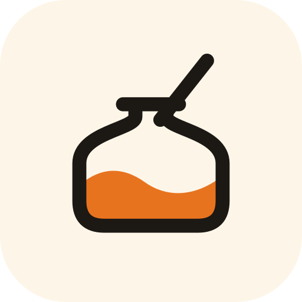
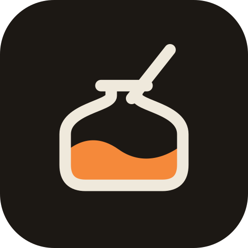
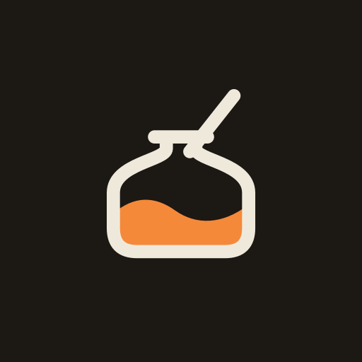
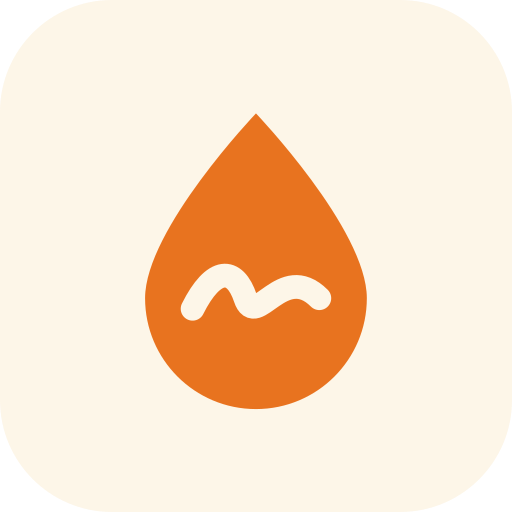
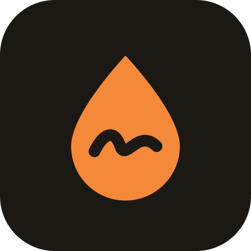

Inkwell — brand sheet
Recommended direction: “Well” — a squat inkwell with a pen dipped in and burnt-orange ink inside. The name, the palette and the hand-drawn Excalidraw feel in one silhouette that still reads at 16 px.
Splash screen (animated — open in a browser)

splash/splash-light.svg
splash/splash-dark.svgLogo
lockup-horizontal-light-bg
lockup-horizontal-dark-bg
lockup-stacked-light-bg
lockup-stacked-dark-bg
mark-light-bg
mark-dark-bg
mark (follows OS theme)
mark-mono (currentColor, inline)
wordmark (outlined Excalifont)
Icons



app-icon-maskable (circle crop shown)Concepts explored
01 · Well ★
Literal inkwell + dipped pen. Most ownable; the name is the picture.


02 · Drop
Ink drop carrying the old sketch stroke. Boldest at tiny sizes, but drops are common.
03 · Monogram
Lowercase “i”: pen-stroke stem, ink-drop dot. Most minimal.
04 · Folder + ink
Evolution of the current mark: same folder, orange stroke ending in a blot.
Palette (from src/index.css)
Ink #1c1814
Chalk #efe9dc
Burnt orange #e8731f
Orange (dark) #f5893a
Cream #fdf6e8